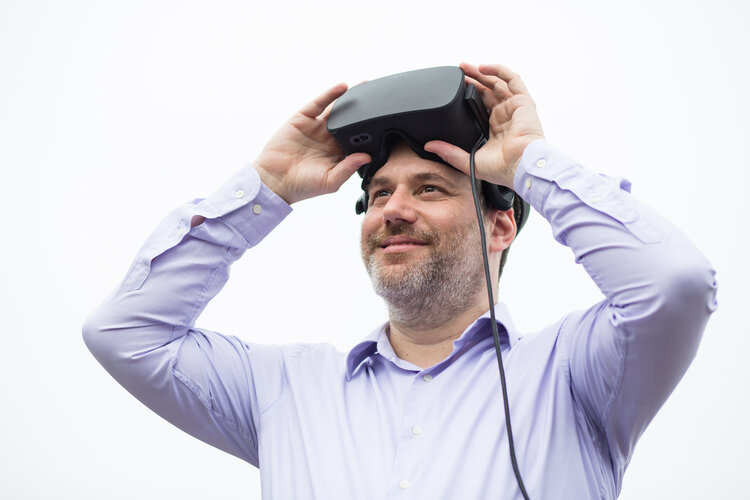

ImmerCom 2023
The 1st ACM Workshop on Mobile Immersive Computing, Networking, and Systems
To be held in conjunction with ACM MobiCom 2023
October 6, 2023, Madrid, Spain
Keynote
Pablo Cesar (Researcher and Group Leader at CWI and Professor at TU Delft)

Title: Towards Volumetric Video ConferencingAbstract: With Social Extended Reality (XR) emerging as a new medium, where users can remotely experience immersive content with others, the vision of a true feeling of ‘being there together’ has become a realistic goal. This keynote will provide an overview about the challenges to achieve such a goal, based on results from practical case studies like the TRANSMIXR and MediaScape XR projects. We will discuss about different technologies, like point clouds, that can be used as the format for representing highly-realistic digital humans, and about metrics and protocols for quantifying the quality of experience. The final intention of the talk is to shed some light on social XR, as a new group of virtual reality experiences based on social photorealistic immersive content. We will discuss about the challenges regarding production and user-centric processes, and discover the new opportunities open by this new medium.
Speaker Bio: Pablo Cesar has led the Distributed and Interactive Systems (DIS) group at CWI since January 2014 and is Professor of Human-Centered Multimedia Systems in the Department of Intelligent Systems (INSY) at TU Delft. He has received the prestigious 2020 Netherlands Prize for ICT Research. He is IEEE (Institute of Electrical and Electronics Engineers) Senior member, the highest grade for which IEEE members can apply, and ACM (Association for Computing Machinery) Distinguished Member, cited for significant achievements across the computing field recognizing up to 10 percent of ACM worldwide membership. His research focuses on measuring and evaluating the way users interact and communicate with each other using a wide range of decentralized digital systems. Cesar has co-directed over 15 externally funded research projects (H2020, FP7, FP6, PPP, NWO).